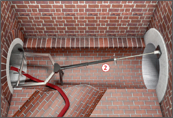

Durch das unkontrollierte Verschieben oder das Platzen eines Rohrabsperrgerätes können Personen verletzt werden.
Allgemeines
Beim Aufenthalt im Gefahrenbereich kann es zu folgenden Ereignissen kommen:
vom Rohrabsperrgerät oder Verbau- und Montageteilen getroffen werden,
Ertrinken bei Überflutung des Arbeitsbereiches,
Ersticken/Vergiften durch das plötzliche Freiwerden von Gasen aus der abgesperrten Leitung,
Knall- und/oder Drucktrauma, z. B. beim Zerplatzen eines pneumatischen Dichtkörpers.
Für Dichtheitsprüfungen von Rohrleitungen müssen bei der Arbeitsvorbereitung besondere Einsatzbedingungen und Gefährdungen berücksichtigt werden.
Rohrleitung
Form, Größe/Durchmesser der abzusperrenden Leitung überprüfen.
Rohrinnenwand im Einsatzbereich des Rohrabsperrgerätes reinigen.
Rohrleitung im Einsatzbereich des Rohrabsperrgerätes auf augenfällige Mängel (z. B. Risse, Grate, hervorstehende Bau- oder Montageteile) und Stabilität untersuchen.
Ggf. Entfernen von Unebenheiten, Graten, Hindernissen.
Möglichen und/oder zugelassenen Leitungsdruck ermitteln (z. B. Angaben des Rohrherstellers, Höhendifferenz zwischen Tief- und Hochschacht).
Nicht überdeckte Leitungen ggf. gegen unzulässig axiale Bewegung sichern.
Rohrabsperrgerät
Geeignetes Rohrabsperrgerät auswählen nach
Form und Beschaffenheit der abzusperrenden Leitung,
Rohrdurchmesser,
Leitungsdruck.
Angaben des Herstellers des Rohrabsperrgerätes beachten.
Anzahl der erforderlichen Rohrabsperrgeräte festlegen.
Kenndaten der Rohrabsperrgeräte feststellen:
Querschnittsform,
Größe,
Nennweite (Nennweitenbereich),
maximal zulässiger Geräteinnendruck,
maximal zulässiger Leitungsdruck.
Sicherheitsventile und Manometer verwenden.
Nur solche Rohrabsperrgeräte verwenden, die von einer "zur Prüfung befähigten Person" geprüft wurden.

Schutzmaßnahmen
Leitungsdruck
Höchstzulässigen Leitungsdruck nicht überschreiten (drucklose Füllung der Leitung).
Bei Druckprüfungen mit Luft Druckbegrenzungsventil einsetzen.
Einbau des Rohrabsperrgerätes
Rohrabsperrgeräte außerhalb der Rohrleitung auf Beschädigung und Dichtheit kontrollieren.
Rohrabsperrgeräte nur an den vom Hersteller vorgesehenen Anschlagpunkten anschlagen und ablassen.
Rohrabsperrgerät auf voller Länge und achsenparallel ins Rohr einsetzen.
Anschließen der vom Hersteller gelieferten oder einer vergleichbaren Steuereinheit mit Druckbegrenzungsventil.
Dichtkörper nur bis zum Anliegen an die Rohrwandung füllen.
Nur ungefährliche, nicht brennbare Füllgase und Flüssigkeiten als Füllmedium verwenden.
Bei mechanischen Rohrabsperrgeräten den Pressteller mit dem vorgeschriebenen Drehmoment so weit zusammenschrauben, bis Dichtung das Rohr abdichtet.
Einbau einer geeigneten formschlüssigen Sicherung gegen Ausschub und unkontrolliertes Verschieben infolge Leitungsdruck (z. B. Verbau).
Zimmermannsmäßigen Verbau als Ausschubsicherung mit einem Sicherheitsfaktor von 1,5 berechnen.
Beim Einsatzvon pneumatischen Rohrabsperrgeräten, -blasen und -kissen darf der volle Geräteinnendruck erst aufgebracht werden, wenn sich keine Personen im Gefahrenbereich aufhalten.
Druckprüfungen
Der Aufsichtführende muss während der Druckprüfung auf der Baustelle ständig anwesend sein.
Prüfdruck von außerhalb des Gefahrenbereiches ablesen.
Mit Luft gefüllte Absperrblasen oder Absperrkissen in umschlossenen Räumen (Rohrleitung oder Schachtbauwerk) nur dann einsetzen, wenn sich innerhalb dieser keine Personen aufhalten.
Ausbau
Ausbau von Ausschubsicherung und Rohrabsperrgerät erst beginnen, wenn der Leitungsdruck vollständig abgebaut ist.
Zusätzliche Maßnahmen gegen die Gefahr des Ertrinkens
Einsatz eines zusätzlichen zweiten Rohrabsperrgerätes.
Geräteinnendruck an beiden Rohrabsperrgeräten ständig kontrollieren.
Bei Versagen eines Rohrabsperrgerätes (z. B. Absinken des Geräteinnendruckes) müssen die Personen den Gefahrenbereich verlassen.
Prüfungen
Geräte und Anlagen sind entsprechend den Einsatzbedingungen und den betrieblichen Verhältnissen, mindestens jedoch einmal jährlich, durch eine "zur Prüfung befähigte Person" auf ihren arbeitssicheren Zustand zu prüfen.